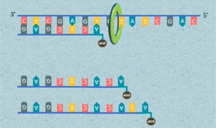
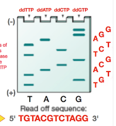
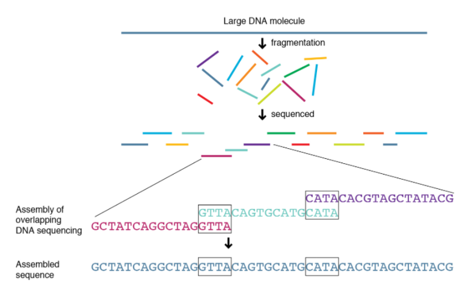

Sanger Sequencing
생어 시퀀싱은 쉽게 말하자면 다양한 길이의 DNA 조각을 만든 뒤 크기별로 구별하여 DNA 염기서열을 알아내는 기술이다. 그 과정은 다음과 같다:
1. 다양한 길이의 DNA 조각 생성하기
우선 이를 이해하려면 dNTP와 ddNTP를 알아야 한다. dNTP는 간단히 말해
DNA 가닥을 계속 합성되도록 하는 뉴클레오타이드로, 각 dATP, dTTP, dGTP, dCTP는 우리가 일반적으로 알고 있는 염기인 A, T, G, C를 나타낸다. 반대로 ddNTP는
DNA 가닥의 합성을 중단시키는 물질이다.
이러한 dNTP와 ddNTP를 실험관 안에 적절한 비율로 섞어 넣어 DNA 합성의 연쇄반응을 정지시키면 다양한 길이의 DNA 조각들을 만들어 낼 수 있다.
예를 들어 염기서열이 CTCGAGTGTATCG 인 DNA가 있어 이와 상보적인 염기서열을 가진 DNA를 합성하고자 하고, ddATP와 다양한 종류의
dNTP들을 실험관에 넣었다고 하자. 다양한 dNTP들이 연결되며 염기서열을 만들어 낼 것이고, 무작위적으로 한번 ddATP가 붙으며 합성이 중단될 것이다. 결과적으로, 염기가 A로 끝나는 다양한 DNA 조각들이 만들어 질 것이다.
ex: CTCGAGTGTATCGAC
-> GAGCTCACATA
-> GAGCTCACA
-> GAGCTCA

이 과정을 다른 실험관에서는 각각 ddTTP, ddGTP, ddCTP를 넣어 반복한다.
2. 길이별로 구분하여 전체 DNA 염기서열 알아내기
‘전기영동’이라는 과정을 거치면 방금 전 만들어낸 다양한 길이의 DNA 조각들을 길이 순으로 나열할 수 있다. 밑으로 갈수록 더 짧은 dna이다. 우리가 알 수 있는 정보는 어떤 ddNTP를 넣었는지, 즉 어떤 염기로 dna가 끝나는지 뿐이다. 따라서 밑에서부터 넣은 ddNTP(마지막 염기)를 차례대로 읽으면 전체 dna 염기서열을 알아낼 수 있다.
예를 들어
????????T
???????C
??????T
?????G
????C
???A
??T
?G
T
가 주어지므로, 전체 염기서열은 TGTACGTCT 임을 알 수 있는 것이다.

이것이 바로 생어 시퀀싱이다. 하지만 생어 시퀀싱은 수없이 긴 염기서열을 분석하기에 많은 시간과 비용이 소요되어 효율이 낮다는 한계를 가지고 있다. 생거 시퀀싱의 단점을 극복하고자 차세대 시퀀서(NGS)인 샷건 시퀀싱(shotgun seqeuncing)이 개발되었다.
Shotgun Sequencing
샷건 시퀀싱은 컴퓨터를 활용하여 산탄총 방식으로 염기서열을 재구성하는 기술이다. 산탄총은 적당히 조준한 지점 주위로 여러 개의 탄알을 날려서 주변에 있을 사냥감을 운 좋게 맞춘다.
이 방식의 알고리즘은 이러하다:
1. 자르기
유전자 실을 여러 개 복사하여, 임의로 짧게 자른다. 같은 유전자 실 여러개를 잘랐기 때문에 토막들은 서로 어느정도 겹친다. 그 뒤에 아까 말한 생어 시퀀싱을 통하여 각각의 염기서열을 판독한다.
2. 재구성하기
수많은 염기서열 토막을 모두 모아서 하나의 실로 재구성하는 과정이다. 바로 여기서 컴퓨터가 이용되어 효율성을 증진시킨다. 컴퓨터는 양 끝의 염기서열이 겹치는 토막을 차례로 찾아서 하나의 실로 재구성한다. 이는 문자열 토막들이 주어졌을 때, 이 모두를 포함하는 가장 짧은 하나의 문자열을 찾는 문제가 된다.
